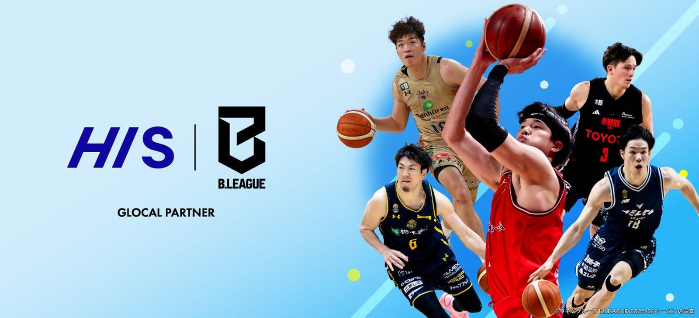

HIS、B.LEAGUEと 「グローカル・パートナー」契約 —— 公式ツアー「B.旅」独占展開へ
株式会社エイチ・アイ・エス（HIS、東京都新宿区）は8月31日、公益社団法人ジャパン・プロフェッショナル・バスケットボールリーグ（B.LEAGUE）とグローカル・パートナー契約を締結したと発表した。HISの旅行ネットワークとB.LEAGUEの地域密着の熱量を掛け合わせ、全クラブ対象の公式観戦ツアー「B.旅」の企画・造成・販売の独占権を取得する。

公式ツアー「B.旅」、全クラブ対象で独占展開
HISは「グローカル・パートナー」として、B.LEAGUE全クラブのファンを対象とした公式ツアー「B.旅」の企画・造成・販売の独占権を取得した。移動・宿泊の手配に加え、チケット付きレギュラーシーズン観戦ツアーや、2027年開催の「りそなグループ B.LEAGUE ALL-STAR GAME WEEKEND 2027 IN AICHI-NAGOYA」観戦ツアー、選手との面会イベント付きツアーなど、多様な商品を展開するとしている。
アジア中心の海外プロモーションとインバウンド送客も
HISは海外52カ国133拠点のグローバルネットワークを活用し、アジアを中心とした海外プロモーションを実施する。海外在住のファンを日本各地のアリーナへ送客するインバウンド型のスポーツツーリズムを構築するほか、「バスケットボールクリニック」の開催など子ども向けの体験機会も提供し、地域活性化と将来のファンコミュニティ形成に取り組むとしている。
両トップがコメント
HIS代表取締役社長の澤田秀太氏は「HISの強みである『世界と地域を結ぶ旅の力』と、B.LEAGUEの『地域密着の熱量』を掛け合わせることで、旅行を軸に地域社会のさらなる活性化に貢献し、ともに魅力的な未来を共創していきたい」とコメント。B.LEAGUEコミッショナーの島田慎二氏も「B.LEAGUEが生み出す『移動』や『地域との出会い』と、HISの国内外に広がるネットワークや体験創出のノウハウを掛け合わせ、観戦体験をさらに豊かにするとともに、地域の活性化や新たな感動の創出に共に挑戦してまいります」と述べている。B.LEAGUEは2026年9月に新たなリーグ構造への移行を予定しており、41都道府県・55クラブへと拡大を続けている。
出典: 株式会社エイチ・アイ・エスプレスリリース「HIS、B.LEAGUEとグローカル・パートナー契約を締結」（PR TIMES・2026年8月31日）
https://prtimes.jp/main/html/rd/p/000001374.000005110.html